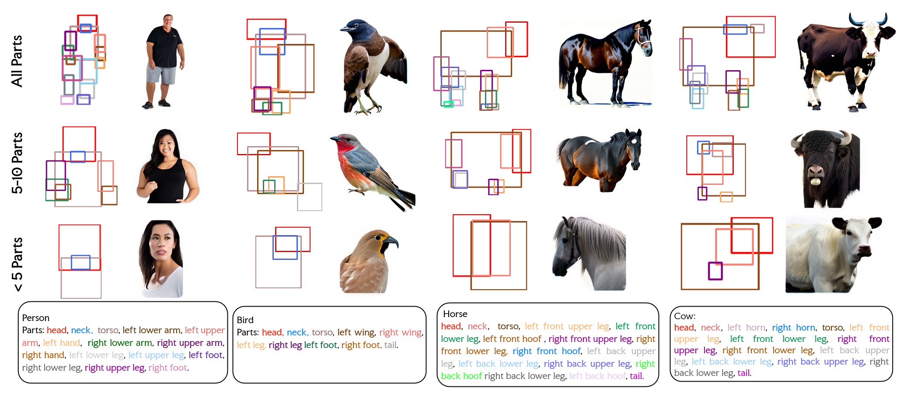
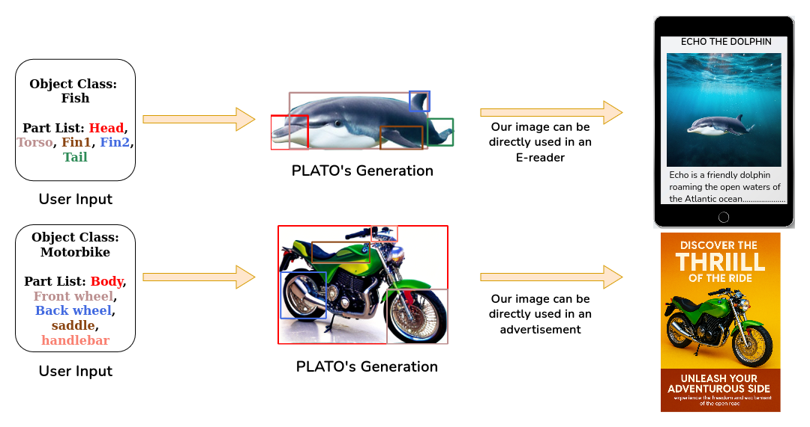

Abstract
Modern generative models often struggle to synthesize structured objects from detailed part specifications. They frequently produce anatomically implausible outputs or hallucinated components. We introduce PLATO, a novel two-stage framework that bridges this gap by enabling precise, part-controlled object generation. The first stage is PLayGen, our novel part layout generator which takes a list of parts and object category as input and synthesizes high fidelity layouts of part bounding boxes. To enhance PLayGen’s ability to learn inter-part relationships, we introduce novel structure-based loss functions. In the second stage, PLayGen’s synthesized layout is used to condition a custom-tuned ControlNet-style adapter, enforcing spatial and connectivity constraints. This results in anatomically consistent, high-fidelity object generations containing precisely the user-specified parts. We further propose new part-level evaluation metrics to rigorously quantify adherence to part specifications. Extensive experiments show that PLATO significantly outperforms state-of-the-art generative models and produces structurally coherent objects in a controllable manner — marking a step forward in modular, part-driven asset generation.
PLATO Demo
 Our Pipeline
Our Pipeline
PLATO’s pipeline: PLayGen (PLATO's layout generator) generates a layout by taking an object and its associated part list as input. The generated layout is transformed into a control image which is fed to a custom tuned ControlNet to generate the final image.
 Results
Results
Generations with variable part lists
PLATO is able to correctly resolve left/right upper/lower placement for any given part list.
PLATO's applications
PLATO's generations can be directly added to scenes since it uses an inpainting pipeline for image generation.
Citation
@inproceedings{10.1145/3746027.3755241,
author = {Muthal, Amruta and Kuruvilla, Varghese P and Sarvadevabhatla, Ravi Kiran},
title = {PLATO: Generating Objects from Part Lists via Synthesized Layouts},
year = {2025},
isbn = {9798400720352},
publisher = {Association for Computing Machinery},
address = {New York, NY, USA},
url = {https://doi.org/10.1145/3746027.3755241},
doi = {10.1145/3746027.3755241},
booktitle = {Proceedings of the 33rd ACM International Conference on Multimedia},
pages = {9940–9949},
numpages = {10},
keywords = {gcnvae, object generation, part layout generation},
location = {Dublin, Ireland},
series = {MM '25}
}
Acknowledgement
This website is adapted from Nerfies and X-Decoder, licensed under a Creative Commons Attribution-ShareAlike 4.0 International License.